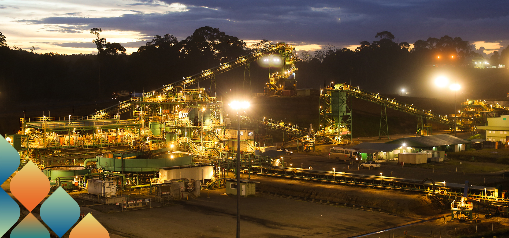
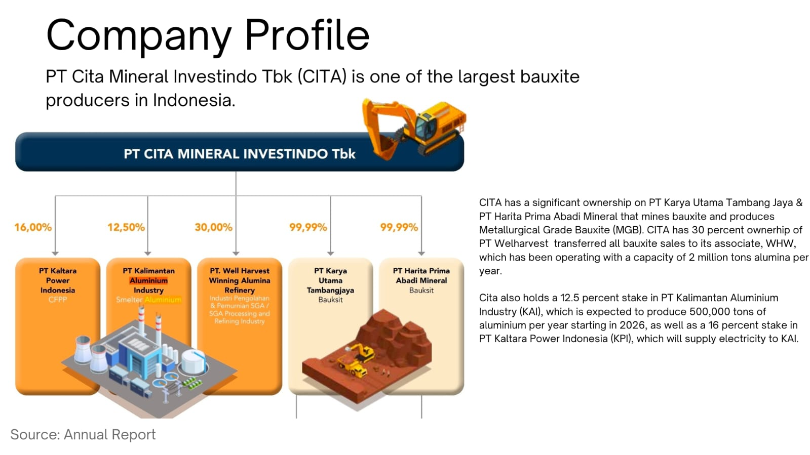
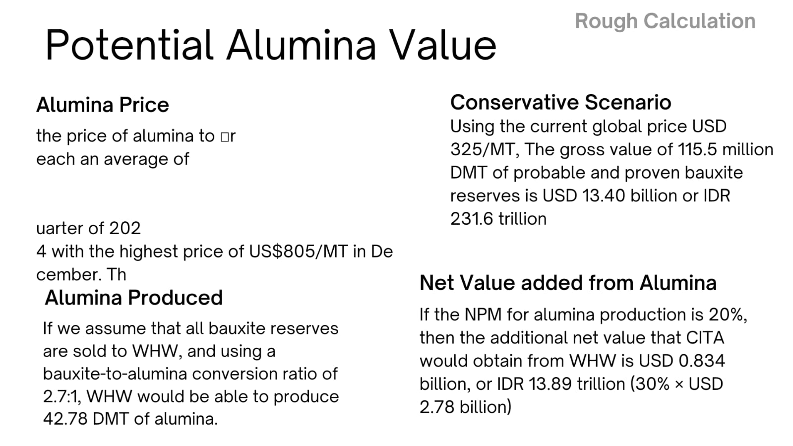
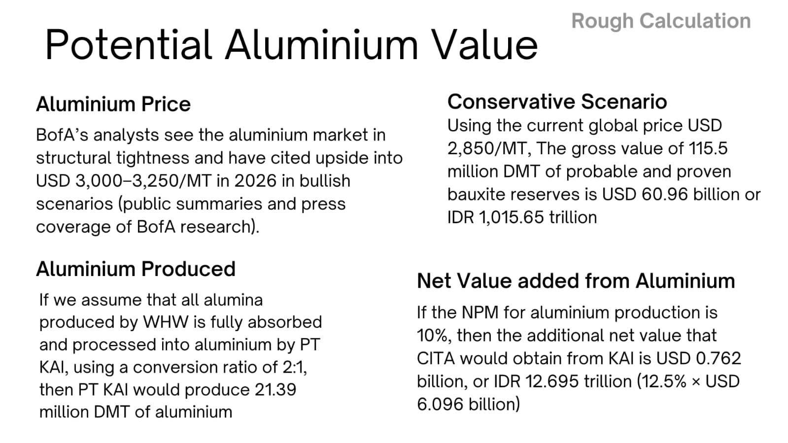

In this post, I will share my current portfolio, which I will regularly update to reflect my latest work and progress.
1. PWON
I first purchased PWON shares in 2019 at an initial price of IDR 490 per share. In the same year, PWON reached its historical peak at approximately IDR 810 per share. During the COVID-19 market crash in March 2020, the share price fell sharply to its lowest level, around IDR 200 per share.
Despite experiencing a significant floating loss at that time, I chose not to sell my holdings. Unfortunately, I also did not take the opportunity to average down during this period.
Photo: Pakuwon Jati
Over the years, PWON’s share price has continued to fluctuate, while the company’s financial performance has yet to return to its pre-pandemic peak. In 2019, PWON recorded its highest net profit of IDR 2.720 trillion, largely driven by the office segment.
Since the pandemic, revenue from this segment has structurally weakened and has not recovered to its previous level. This reflects a broader shift in demand for office space, influenced by changes in working patterns and corporate real estate strategies.
From a long-term investment perspective, this structural change does not necessarily undermine PWON’s overall business quality. Instead, it highlights the importance of portfolio diversification within the company’s asset base.
PWON’s shopping mall and hospitality segments have shown steady recovery and growth, benefiting from the normalization of consumer activity, rising domestic consumption, and the resilience of experiential retail. The segments increasingly serve as the core drivers of recurring income and long-term value creation.
As of the end of 2025, PWON’s share price remains significantly below its 2019 peak. As of 30 December 2025, PWON was trading at IDR 338 per share. For a long-term investor, this valuation gap reflects not only cyclical recovery dynamics but also the market’s reassessment of earnings sustainability and segmental growth prospects.
My continued holding of PWON is therefore based on a long-term strategy: focusing on asset quality, recurring cash flow from prime retail properties, and management’s ability to adapt its portfolio to post-pandemic structural shifts, rather than short-term price movements.
At the current stage, I continue to allocate approximately 5.7% of my total investment portfolio to PWON. This position size strikes a balance between conviction and risk management. While I remain cautious about the structural challenges in the office segment, I still view PWON as a long-term holding supported by high-quality retail assets, improving performance in the shopping mall and hospitality segments, and its ability to generate recurring cash flow.
Maintaining a 5–7% allocation allows me to remain invested in the company’s long-term recovery potential while avoiding excessive concentration risk within my portfolio. This position size also provides flexibility to reassess the investment as earnings visibility improves, capital allocation decisions evolve, and broader macroeconomic conditions, such as interest rates and consumer spending, continue to normalize.
“The three most important words in investing are margin of safety.”
— Warren Buffett
2. DKFT
I started paying attention to DKFT shares when the price was still around IDR 180 per share. The company operates as a nickel ore miner and has begun a turnaround after years of persistent losses.
The improvement in profitability was driven mainly by the shutdown of its ferronickel smelter for stainless steel production, which had consistently generated annual losses. This strategic decision marked a meaningful shift in DKFT’s operating structure.
I gradually accumulated DKFT shares until reaching an average purchase price of IDR 570. I stopped adding to my position once the share price approached IDR 600, as the valuation had risen sharply.
From a long-term perspective, DKFT has not yet demonstrated strong growth prospects. Its plan to build a battery-grade nickel smelter has not been executed and therefore has not contributed meaningful value to the business so far.
Industry Context
DKFT is among the companies benefiting from the oversupply of nickel smelters in Indonesia. Despite the decline in global nickel prices, domestic demand for nickel ore remains very strong. As a result, Indonesia has even imported nickel ore from the Philippines to meet the needs of its domestic smelting industry.
Policy & Quota Outlook
At the end of 2025, the Minister of Energy and Mineral Resources (ESDM), Mr. Bahlil Lahadalia, announced a policy to tighten nickel mining permits as part of efforts to support a recovery in global nickel prices. Following this announcement, global nickel prices rebounded, reaching approximately USD 17,000 per metric ton by January 2026.
In 2025, DKFT held a nickel ore mining quota of 3 million metric tons. For 2026, the company has applied for an increased quota of 7 million metric tons, supported by an expansion in its proven nickel ore reserves.
Investment View
Information regarding the approval of DKFT’s mining quota is expected to be announced in the first quarter of 2026. This development will be a key determinant in assessing whether the stock should be bought, held, or sold. Under current conditions, I do not recommend buying DKFT shares, as the valuation has become relatively expensive compared to its fundamental progress.
Current Position
Status: Hold / Avoid adding
Key Catalyst: Mining quota approval (Q1 2026)
Main Risk: Valuation ahead of execution
3. SRIL
The Rise and Fall of Sritex (SRIL): A Tale of Ignored Red Flags
Sri Rejeki Isman Tbk (SRIL), widely known as Sritex, was once the largest integrated textile manufacturer in Southeast Asia. Its golden era began in 1994 when it secured prestigious contracts to produce military uniforms for NATO and the German Army. The company’s resilience was legendary; it not only survived the 1998 Asian Financial Crisis but also managed to grow eightfold compared to its initial integration in 1992.
The company’s trajectory seemed unstoppable. In 2014, Iwan S. Lukminto was honored as Forbes Indonesia’s Businessman of the Year and EY Entrepreneur of the Year. Sritex also collected numerous accolades, including the IP Enterprise Trophy from WIPO and being named a Top Performing Listed Company in 2015. Until 2019, SRIL consistently reported rising net profits, maintained a seemingly reasonable valuation, and was a staple in the prestigious LQ45 index, signifying high liquidity and market trust.
When I began my career as a civil servant at the Audit Board of Indonesia (BPK RI) in early 2022, I noticed that our official uniforms were also produced by Sritex. The quality was undeniably excellent. However, I soon learned a harsh lesson in investing: superior product quality does not necessarily translate to sound financial management.
In my superficial analysis at the time, I overlooked two critical red flags: an alarmingly high debt-to-equity ratio and a continuous increase in accounts receivable. The facade began to crumble when the company failed to submit its Q1 2021 financial report, leading to its suspension by the Indonesia Stock Exchange on May 18, 2021. Fortunately, I look back at this as a valuable lesson learned at a very low cost, as my investment in SRIL was less than IDR 1 million. The rest is history.
4. ADRO & ADMR
I have been observing Adaro Energy (ADRO) for a long time, as it is one of Indonesia’s coal mining companies with relatively stable financial performance despite the cyclical fluctuations in coal prices. ADRO is also among the coal producers with the largest reserves in Indonesia, which has long supported its operational resilience.

Photo: Alamtriminerals.id
I first purchased ADRO shares in 2019 at around IDR 1,300, but I sold them relatively quickly. I no longer remember the exact reason, although it was likely because I wanted to reallocate capital to another company that I considered more attractive at the time.
Following the COVID-19 outbreak in 2020, ADRO’s financial performance improved significantly, driven by a sharp surge in global coal prices. I only began paying attention to ADRO again and gradually reaccumulated the stock in mid-2024, after learning about the company’s long-term plan to transition toward green energy.
This strategy aims to anticipate the eventual depletion of coal reserves while aligning with Indonesia’s Net Zero Emissions 2050 commitment. An interesting development occurred at the end of 2024, when ADRO’s share price surged nearly 100%, fueled by market speculation surrounding the potential IPO of its green energy business.
However, instead of spinning off the renewable segment, ADRO ultimately divested its majority stake in Adaro Andalan Indonesia (AADI), the company’s primary profit contributor at the time, which operated its thermal coal mining business.
To compensate shareholders, ADRO distributed an extraordinarily large dividend, which was widely perceived as an opportunity for investors to participate in AADI’s IPO. AADI was listed at a relatively attractive valuation, and the IPO proved highly successful.
Shareholders who reinvested their ADRO dividends into AADI shares were able to realize gains of nearly 100%. Interestingly, during this period, ADRO’s share price declined sharply. Personally, I chose to average down my ADRO position, viewing the price correction as an opportunity to accumulate shares of a company that was repositioning itself for a cleaner and more sustainable energy future.
In mid-2025, I decided to sell my entire AADI position, realizing a profit of approximately 50%, and reallocated the proceeds toward further accumulation of ADRO shares, despite carrying an unrealized loss of around 30% at the time. In addition, I also began gradually investing in ADMR, whose valuation appeared relatively more premium compared to ADRO.
Currently, ADRO holds approximately 85% ownership in ADMR and around 20% in AADI. As a result, ADRO’s main profit engine has shifted from AADI to ADMR, which focuses on high-calorie coal. Beyond coal, ADMR is also developing an aluminum smelter project in North Kalimantan. The smelter will be supplied with electricity generated by hydropower plants owned by ADRO, creating vertical integration between energy generation and downstream aluminum production.
This indicates that ADRO’s future revenue will be increasingly dependent on ADMR, while its renewable and green energy ventures, although strategic, are not yet meaningful contributors to earnings.
As of 6 January 2025, ADMR’s share price has risen significantly, driven by expectations ahead of the aluminum smelter’s operational phase. In my view, the long-term outlook for Adaro Energy remains highly promising, provided that the company continues to be managed prudently and strategically. For this reason, I have decided to continue holding both ADRO and ADMR shares.
“If you’re not willing to react with equanimity to a market price decline of 50%, you’re not fit to be a common shareholder.”
— Charlie Munger
5. CITA
Investment Insight: PT Cita Mineral Investindo Tbk (CITA) – Beyond Bauxite Mining
As global aluminum prices reached a 4-year high in January 2026, CITA is positioned as a unique play in the metals sector. While often categorized solely as an upstream bauxite miner, CITA’s true profitability is now driven by its downstream "money machines" through associate entities (WHW and KAI), rather than just raw ore sales.

Photo: Cita Mineral Investindo
Market Context: The Aluminum Bull Run
The aluminum market has experienced significant structural tightness over the last six months. Since mid-2025, aluminum prices have steadily climbed from approximately USD 2,500/MT to peaks near USD 3,300/MT in January 2026. Increased demand from the electric vehicle (EV) sector and solar panel manufacturing has created a persistent deficit.
This macro trend directly enhances the valuation of CITA’s downstream assets, particularly its stake in the aluminum smelter (KAI) which is expected to produce 500,000 tons of aluminum per year starting in 2026.

Deep Dive: Fact vs. "Rough Calculation"
While presentation slides often present a "Potential Value" of up to USD 60.96 billion (over IDR 1,000 trillion) based on total bauxite reserves, it is critical not to confuse "Gross Value" with Company Valuation. A mining company is never valued based on the total theoretical sales price of its ground reserves, but rather on its annual Cash Flow and monetizing capability.
The real focus should be on the "Current Net Profit," which soared by 246% to IDR 2.49 trillion despite a slight decline in production and sales volume.

Valuation Summary
Based on the current data (Market Cap IDR 16.356 trillion, PER 5.50x, PBV 1.95x), CITA appears undervalued relative to its growth trajectory. A Price-to-Earnings (PER) ratio of 5.50x is exceptionally low for a company recording triple-digit profit growth.
CITA should be viewed as the most affordable proxy for downstream aluminum and alumina refining in Indonesia. Its value is anchored by the 115.5 million DMT of probable and proven bauxite reserves which provide the essential feedstock for its high-margin downstream associates.
This reflects my personal investment decision and perspective. It is not intended as investment advice or a recommendation to buy, sell, or hold any securities. Investing in the capital market involves significant risks, including the potential loss of capital. Each investor should conduct their own research and make decisions according to their individual risk tolerance and financial circumstances.
The most important thing is focus allocation; when it's wrong, the minus one could change everything.
Dalam tulisan ini, saya akan berbagi portofolio saya saat ini, yang akan saya perbarui secara berkala untuk mencerminkan perkembangan dan kemajuan terbaru saya.
1. PWON
Saya pertama kali membeli saham PWON pada tahun 2019 dengan harga awal IDR 490 per saham. Pada tahun yang sama, PWON mencapai puncak historisnya di sekitar IDR 810 per saham. Saat terjadi crash pasar akibat COVID-19 pada Maret 2020, harga saham anjlok tajam ke level terendahnya, sekitar IDR 200 per saham.
Meskipun mengalami floating loss yang signifikan pada saat itu, saya memilih untuk tidak menjual kepemilikan saya. Sayangnya, saya juga tidak memanfaatkan kesempatan untuk melakukan average down selama periode tersebut.
Foto: Pakuwon Jati
Selama bertahun-tahun, harga saham PWON terus berfluktuasi, sementara kinerja keuangan perusahaan belum kembali ke puncak pra-pandemi. Pada tahun 2019, PWON mencatat laba bersih tertingginya sebesar IDR 2,720 triliun, sebagian besar didorong oleh segmen perkantoran.
Sejak pandemi, pendapatan dari segmen ini melemah secara struktural dan belum pulih ke levelnya sebelumnya. Hal ini mencerminkan pergeseran yang lebih luas dalam permintaan ruang kantor, dipengaruhi oleh perubahan pola kerja dan strategi real estat korporat.
Dari perspektif investasi jangka panjang, perubahan struktural ini tidak serta-merta merusak kualitas bisnis PWON secara keseluruhan. Sebaliknya, ini menegaskan pentingnya diversifikasi portofolio dalam basis aset perusahaan.
Segmen pusat perbelanjaan dan perhotelan PWON telah menunjukkan pemulihan dan pertumbuhan yang stabil, diuntungkan oleh normalisasi aktivitas konsumen, meningkatnya konsumsi domestik, dan ketahanan ritel berbasis pengalaman. Kedua segmen ini semakin menjadi penggerak utama pendapatan berulang dan penciptaan nilai jangka panjang.
Per akhir 2025, harga saham PWON masih jauh di bawah puncaknya pada 2019. Per 30 Desember 2025, PWON diperdagangkan di IDR 338 per saham. Bagi investor jangka panjang, kesenjangan valuasi ini mencerminkan bukan hanya dinamika pemulihan siklus, tetapi juga penilaian ulang pasar terhadap keberlanjutan laba dan prospek pertumbuhan segmental.
Keputusan saya untuk terus memegang PWON oleh karena itu didasarkan pada strategi jangka panjang: berfokus pada kualitas aset, arus kas berulang dari properti ritel premium, dan kemampuan manajemen untuk mengadaptasi portofolionya terhadap pergeseran struktural pasca-pandemi, bukan pada pergerakan harga jangka pendek.
Pada tahap ini, saya terus mengalokasikan sekitar 5,7% dari total portofolio investasi saya ke PWON. Ukuran posisi ini menyeimbangkan antara keyakinan dan manajemen risiko. Meski saya tetap berhati-hati terhadap tantangan struktural di segmen perkantoran, saya masih memandang PWON sebagai kepemilikan jangka panjang yang didukung oleh aset ritel berkualitas tinggi, kinerja yang membaik di segmen pusat perbelanjaan dan perhotelan, serta kemampuannya menghasilkan arus kas berulang.
Mempertahankan alokasi 5–7% memungkinkan saya tetap berinvestasi pada potensi pemulihan jangka panjang perusahaan sambil menghindari risiko konsentrasi yang berlebihan dalam portofolio saya. Ukuran posisi ini juga memberikan fleksibilitas untuk meninjau ulang investasi seiring membaiknya visibilitas laba, evolusi keputusan alokasi modal, dan terus normalnya kondisi makroekonomi yang lebih luas, seperti suku bunga dan pengeluaran konsumen.
"Tiga kata terpenting dalam investasi adalah margin of safety."
— Warren Buffett
2. DKFT
Saya mulai memperhatikan saham DKFT ketika harganya masih berada di sekitar IDR 180 per saham. Perusahaan ini beroperasi sebagai penambang bijih nikel dan telah memulai pembalikan arah setelah bertahun-tahun mengalami kerugian terus-menerus.
Perbaikan profitabilitas terutama didorong oleh penutupan smelter feronikelnya untuk produksi baja tahan karat, yang secara konsisten menghasilkan kerugian tahunan. Keputusan strategis ini menandai perubahan yang berarti dalam struktur operasional DKFT.
Saya secara bertahap mengakumulasi saham DKFT hingga mencapai harga rata-rata pembelian IDR 570. Saya berhenti menambah posisi begitu harga saham mendekati IDR 600, karena valuasi sudah naik tajam.
Dari perspektif jangka panjang, DKFT belum menunjukkan prospek pertumbuhan yang kuat. Rencana pembangunan smelter nikel grade baterai belum terealisasi dan oleh karena itu belum memberikan nilai yang berarti bagi bisnis sejauh ini.
Konteks Industri
DKFT termasuk perusahaan yang diuntungkan dari kelebihan pasokan smelter nikel di Indonesia. Meskipun harga nikel global menurun, permintaan domestik terhadap bijih nikel tetap sangat kuat. Akibatnya, Indonesia bahkan mengimpor bijih nikel dari Filipina untuk memenuhi kebutuhan industri smelting domestiknya.
Kebijakan & Prospek Kuota
Pada akhir 2025, Menteri Energi dan Sumber Daya Mineral (ESDM), Bapak Bahlil Lahadalia, mengumumkan kebijakan untuk memperketat izin pertambangan nikel sebagai bagian dari upaya mendukung pemulihan harga nikel global. Menyusul pengumuman ini, harga nikel global rebound, mencapai sekitar USD 17.000 per metrik ton pada Januari 2026.
Pada tahun 2025, DKFT memegang kuota penambangan bijih nikel sebesar 3 juta metrik ton. Untuk tahun 2026, perusahaan telah mengajukan peningkatan kuota menjadi 7 juta metrik ton, didukung oleh ekspansi cadangan bijih nikel terbuktinya.
Pandangan Investasi
Informasi mengenai persetujuan kuota penambangan DKFT diperkirakan akan diumumkan pada kuartal pertama 2026. Perkembangan ini akan menjadi penentu kunci dalam menilai apakah saham ini layak dibeli, ditahan, atau dijual. Dalam kondisi saat ini, saya tidak merekomendasikan pembelian saham DKFT, karena valuasinya sudah relatif mahal dibandingkan kemajuan fundamentalnya.
Posisi Saat Ini
Status: Hold / Hindari menambah posisi
Katalis Kunci: Persetujuan kuota penambangan (Q1 2026)
Risiko Utama: Valuasi mendahului eksekusi
3. SRIL
Kebangkitan dan Kejatuhan Sritex (SRIL): Kisah Red Flag yang Diabaikan
Sri Rejeki Isman Tbk (SRIL), yang dikenal luas sebagai Sritex, pernah menjadi produsen tekstil terpadu terbesar di Asia Tenggara. Era keemasannya dimulai pada 1994 ketika perusahaan ini berhasil mendapatkan kontrak bergengsi untuk memproduksi seragam militer bagi NATO dan Angkatan Darat Jerman. Ketangguhan perusahaan ini legendaris; tidak hanya mampu bertahan dari Krisis Keuangan Asia 1998, tetapi juga berhasil tumbuh delapan kali lipat dibandingkan saat pertama kali terintegrasi pada 1992.
Trajektori perusahaan ini tampak tak terbendung. Pada 2014, Iwan S. Lukminto dinobatkan sebagai Businessperson of the Year versi Forbes Indonesia dan EY Entrepreneur of the Year. Sritex juga mengumpulkan berbagai penghargaan, termasuk IP Enterprise Trophy dari WIPO dan dinobatkan sebagai Top Performing Listed Company pada 2015. Hingga 2019, SRIL secara konsisten melaporkan laba bersih yang terus meningkat, mempertahankan valuasi yang tampak wajar, dan menjadi anggota tetap indeks LQ45 bergengsi, yang melambangkan likuiditas tinggi dan kepercayaan pasar.
Ketika saya memulai karier sebagai aparatur sipil negara di Badan Pemeriksa Keuangan Republik Indonesia (BPK RI) pada awal 2022, saya memperhatikan bahwa seragam dinas kami juga diproduksi oleh Sritex. Kualitasnya tidak perlu diragukan lagi. Namun, saya segera mendapat pelajaran keras dalam berinvestasi: kualitas produk yang unggul tidak serta-merta mencerminkan pengelolaan keuangan yang sehat.
Dalam analisis saya yang dangkal saat itu, saya mengabaikan dua red flag kritis: rasio debt-to-equity yang mengkhawatirkan tingginya dan kenaikan piutang usaha yang terus-menerus. Fasad mulai runtuh ketika perusahaan gagal menyampaikan laporan keuangan Q1 2021, yang menyebabkan suspensi oleh Bursa Efek Indonesia pada 18 Mei 2021. Untungnya, saya memandang ini sebagai pelajaran berharga yang dipetik dengan biaya sangat rendah, karena investasi saya di SRIL kurang dari IDR 1 juta. Sisanya sudah menjadi sejarah.
4. ADRO & ADMR
Saya sudah lama mengamati Adaro Energy (ADRO) karena merupakan salah satu perusahaan pertambangan batu bara Indonesia dengan kinerja keuangan yang relatif stabil meski terdapat fluktuasi siklus harga batu bara. ADRO juga termasuk produsen batu bara dengan cadangan terbesar di Indonesia, yang sejak lama mendukung ketahanan operasionalnya.
Foto: Alamtriminerals.id
Saya pertama kali membeli saham ADRO pada 2019 di sekitar IDR 1.300, namun menjualnya cukup cepat. Saya sudah tidak ingat alasan pastinya, meskipun kemungkinan karena ingin mengalokasikan modal ke perusahaan lain yang saya anggap lebih menarik saat itu.
Pasca wabah COVID-19 pada 2020, kinerja keuangan ADRO meningkat signifikan, didorong oleh lonjakan tajam harga batu bara global. Saya baru mulai memperhatikan ADRO kembali dan secara bertahap mengakumulasi sahamnya pada pertengahan 2024, setelah mempelajari rencana jangka panjang perusahaan untuk beralih ke energi hijau.
Strategi ini bertujuan mengantisipasi menipisnya cadangan batu bara sekaligus selaras dengan komitmen Net Zero Emissions 2050 Indonesia. Sebuah perkembangan menarik terjadi di akhir 2024, ketika harga saham ADRO melonjak hampir 100%, didorong oleh spekulasi pasar seputar potensi IPO bisnis energi hijaunya.
Namun, alih-alih melakukan spin-off segmen terbarukan, ADRO akhirnya melepas mayoritas kepemilikannya di Adaro Andalan Indonesia (AADI), kontributor laba utama perusahaan saat itu, yang mengoperasikan bisnis pertambangan batu bara termalnya.
Sebagai kompensasi bagi pemegang saham, ADRO mendistribusikan dividen yang luar biasa besar, yang secara luas dipandang sebagai kesempatan bagi investor untuk berpartisipasi dalam IPO AADI. AADI dicatatkan dengan valuasi yang relatif menarik, dan IPO-nya terbukti sangat sukses.
Pemegang saham yang menginvestasikan kembali dividen ADRO mereka ke saham AADI mampu merealisasikan keuntungan hampir 100%. Menariknya, selama periode ini, harga saham ADRO turun tajam. Secara pribadi, saya memilih untuk melakukan average down posisi ADRO saya, memandang koreksi harga sebagai peluang untuk mengakumulasi saham perusahaan yang sedang memposisikan ulang dirinya menuju masa depan energi yang lebih bersih dan berkelanjutan.
Pada pertengahan 2025, saya memutuskan untuk menjual seluruh posisi AADI saya, merealisasikan keuntungan sekitar 50%, dan mengalokasikan kembali hasilnya untuk akumulasi lebih lanjut saham ADRO, meskipun saat itu menanggung unrealized loss sekitar 30%. Selain itu, saya juga mulai secara bertahap berinvestasi di ADMR, yang valuasinya tampak relatif lebih premium dibandingkan ADRO.
Saat ini, ADRO memegang sekitar 85% kepemilikan di ADMR dan sekitar 20% di AADI. Akibatnya, mesin laba utama ADRO telah beralih dari AADI ke ADMR, yang berfokus pada batu bara berkalori tinggi. Selain batu bara, ADMR juga sedang mengembangkan proyek smelter aluminium di Kalimantan Utara. Smelter tersebut akan dipasok listrik yang dihasilkan oleh pembangkit listrik tenaga air milik ADRO, menciptakan integrasi vertikal antara pembangkitan energi dan produksi aluminium hilir.
Hal ini mengindikasikan bahwa pendapatan ADRO ke depan akan semakin bergantung pada ADMR, sementara usaha energi terbarukan dan hijau, meskipun strategis, belum menjadi kontributor laba yang signifikan.
Per 6 Januari 2025, harga saham ADMR telah naik signifikan, didorong oleh ekspektasi menjelang fase operasional smelter aluminium. Menurut pandangan saya, prospek jangka panjang Adaro Energy tetap sangat menjanjikan, asalkan perusahaan terus dikelola dengan prudent dan strategis. Untuk alasan ini, saya memutuskan untuk terus memegang saham ADRO maupun ADMR.
"Jika Anda tidak siap bereaksi dengan tenang terhadap penurunan harga pasar sebesar 50%, Anda tidak layak menjadi pemegang saham biasa."
— Charlie Munger
5. CITA
Insight Investasi: PT Cita Mineral Investindo Tbk (CITA) – Lebih dari Sekadar Penambang Bauksit
Saat harga aluminium global mencapai level tertinggi dalam 4 tahun pada Januari 2026, CITA diposisikan sebagai peluang unik di sektor logam. Meski sering dikategorikan semata-mata sebagai penambang bauksit hulu, profitabilitas sejati CITA kini didorong oleh "mesin uang" hilirnya melalui entitas asosiasi (WHW dan KAI), bukan hanya penjualan bijih mentah.
Foto: Cita Mineral Investindo
Konteks Pasar: Bull Run Aluminium
Pasar aluminium mengalami ketegangan struktural yang signifikan selama enam bulan terakhir. Sejak pertengahan 2025, harga aluminium terus merangkak naik dari sekitar USD 2.500/MT hingga mencapai puncak mendekati USD 3.300/MT pada Januari 2026. Meningkatnya permintaan dari sektor kendaraan listrik (EV) dan manufaktur panel surya telah menciptakan defisit yang persisten.
Tren makro ini secara langsung meningkatkan valuasi aset hilir CITA, khususnya kepemilikannya di smelter aluminium (KAI) yang diproyeksikan memproduksi 500.000 ton aluminium per tahun mulai 2026.
Telaah Mendalam: Fakta vs. "Kalkulasi Kasar"
Meskipun slide presentasi sering menyajikan "Potential Value" hingga USD 60,96 miliar (lebih dari IDR 1.000 triliun) berdasarkan total cadangan bauksit, sangat penting untuk tidak mencampuradukkan "Gross Value" dengan Valuasi Perusahaan. Perusahaan tambang tidak pernah dinilai berdasarkan total harga jual teoritis cadangan di dalam tanahnya, melainkan berdasarkan Arus Kas tahunan dan kemampuan memonetisasinya.
Fokus yang sesungguhnya harus tertuju pada "Laba Bersih Saat Ini," yang melonjak 246% menjadi IDR 2,49 triliun meskipun ada sedikit penurunan volume produksi dan penjualan.
Ringkasan Valuasi
Berdasarkan data saat ini (Market Cap IDR 16,356 triliun, PER 5,50x, PBV 1,95x), CITA tampak undervalued relatif terhadap trajektori pertumbuhannya. Rasio Price-to-Earnings (PER) sebesar 5,50x sangat rendah untuk perusahaan yang mencatat pertumbuhan laba tiga digit.
CITA seharusnya dipandang sebagai proxy paling terjangkau untuk aluminium hilir dan pemurnian alumina di Indonesia. Nilainya ditopang oleh 115,5 juta DMT cadangan bauksit probable dan proven yang menyediakan bahan baku esensial bagi entitas hilirnya yang bermargin tinggi.
Tulisan ini mencerminkan keputusan dan perspektif investasi pribadi saya. Ini tidak dimaksudkan sebagai saran investasi atau rekomendasi untuk membeli, menjual, atau menahan efek apa pun. Berinvestasi di pasar modal melibatkan risiko signifikan, termasuk potensi kerugian modal. Setiap investor harus melakukan riset sendiri dan membuat keputusan sesuai toleransi risiko dan kondisi keuangan masing-masing.
Yang terpenting adalah alokasi yang tepat; ketika salah, minus satu bisa mengubah segalanya.